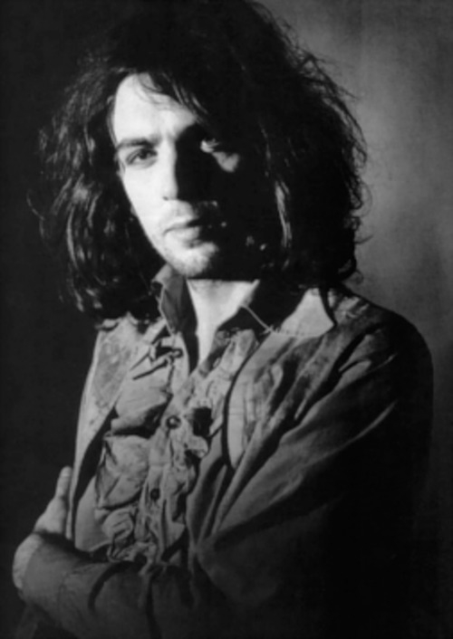
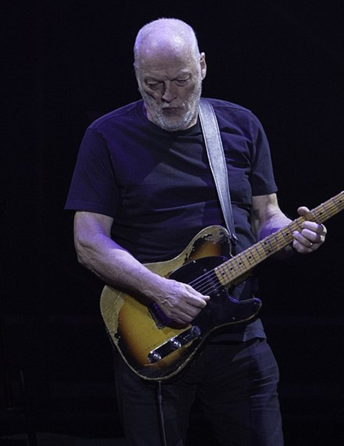
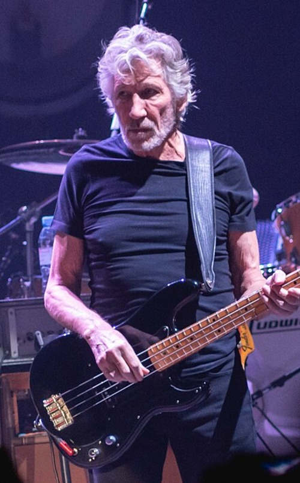
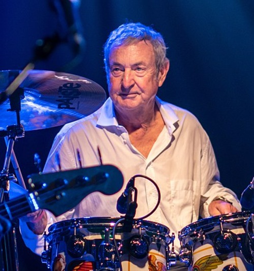

Syd Barrett

Roger Keith "Syd" Barrett, né le 6 janvier 1946 à Cambridge et mort le 7 juillet 2006 à Cambridge, est un musicien, compositeur, chanteur et peintre anglais. Il est surtout connu pour avoir été le cofondateur, le chanteur principal, le guitariste et le principal auteur-compositeur du groupe de rock psychédélique Pink Floyd.
Barrett a rencontré les futurs membres du Pink Floyd tout en étudiant à l'université de Londres, où il est devenu ami avec Roger Waters, avec qui il a partagé une passion pour la musique. Ils ont formé le groupe en 1965, aux côtés de Nick Mason et Richard Wright. Barrett a contribué à l'écriture et à l'interprétation des premiers succès du groupe, notamment "Arnold Layne" et "See Emily Play".
Cependant, en raison de son comportement de plus en plus instable, alimenté par sa consommation excessive de drogues psychédéliques comme le LSD, Barrett a quitté Pink Floyd en 1968. Après son départ du groupe, il a poursuivi une carrière solo mais a lutté avec sa santé mentale.
Malgré sa brève période avec Pink Floyd, l'héritage artistique de Syd Barrett continue d'influencer de nombreux musiciens et admirateurs de musique psychédélique et rock. Ses compositions et son style de jeu unique ont laissé une marque indélébile sur l'histoire de la musique, et il reste une figure emblématique du mouvement psychédélique des années 1960.
David Gilmour

David Jon Gilmour, né le 6 mars 1946 à Grantchester Meadows, est un musicien, chanteur, auteur-compositeur et producteur de disques britannique. Il est surtout connu pour être le guitariste principal, chanteur et l'un des principaux compositeurs du groupe de rock progressif Pink Floyd.
Gilmour a rejoint Pink Floyd en 1968, peu de temps après le départ de Syd Barrett, et a rapidement contribué au son distinctif du groupe avec sa technique de guitare fluide et ses compositions réfléchies. Au fil des ans, il a joué un rôle de plus en plus important dans le processus créatif du groupe, co-écrivant de nombreuses chansons emblématiques et contribuant à façonner leur direction musicale.
En plus de son travail avec Pink Floyd, Gilmour a également mené une prolifique carrière solo, publiant plusieurs albums acclamés par la critique. Son style de jeu unique, combinant technique virtuose et sensibilité émotionnelle, a fait de lui l'un des guitaristes les plus respectés de l'histoire de la musique rock.
Au fil des décennies, David Gilmour a continué à inspirer des générations de musiciens et de fans à travers le monde, laissant derrière lui un héritage durable dans le paysage musical. Son influence sur le rock et le blues est indéniable, et son œuvre continue de toucher et d'inspirer des millions de personnes.
Roger Waters

Roger Waters, de son nom complet George Roger Waters, est un musicien, auteur-compositeur, chanteur et producteur de disques britannique, né le 6 septembre 1943 à Great Bookham, dans le Surrey, en Angleterre. Il est surtout connu pour avoir été le bassiste, parolier principal et l'un des chanteurs du groupe de rock légendaire Pink Floyd.
Waters a été un membre fondateur de Pink Floyd en 1965, aux côtés de Syd Barrett, Nick Mason et Richard Wright. Il a joué un rôle central dans l'évolution du groupe, contribuant non seulement à sa musique mais aussi à ses concepts et à sa vision artistique. Ses paroles poétiques et souvent introspectives ont été l'une des signatures sonores distinctives de Pink Floyd.
Au fil des ans, Waters est devenu l'un des artistes les plus influents et les plus respectés de l'histoire de la musique rock. Son implication dans des albums conceptuels emblématiques tels que "The Dark Side of the Moon", "Wish You Were Here" et "The Wall" a contribué à définir le son et l'esthétique du rock progressif.
En plus de sa carrière au sein de Pink Floyd, Waters a également poursuivi une carrière solo réussie, produisant plusieurs albums acclamés par la critique et se produisant dans des tournées mondiales à guichets fermés. Son engagement politique et social, ainsi que ses efforts pour promouvoir la paix et les droits de l'homme, ont également marqué sa carrière et lui ont valu une reconnaissance internationale.
Aujourd'hui, Roger Waters est reconnu comme l'un des plus grands artistes de sa génération, et son impact sur la musique et la culture populaires continue d'être ressenti à travers le monde.
Richard Wright
Richard William Wright était un musicien et compositeur anglais, né le 28 juillet 1943 à Londres et décédé le 15 septembre 2008 à Londres. Il est surtout connu pour avoir été le claviériste, le pianiste et l'un des membres fondateurs du légendaire groupe de rock Pink Floyd.
Wright a été un membre clé de Pink Floyd depuis sa formation en 1965, contribuant de manière significative à l'élaboration du son du groupe. Son jeu de clavier et de piano, ainsi que ses talents de composition, ont été des éléments essentiels de nombreux albums emblématiques du groupe, tels que "The Dark Side of the Moon" et "Wish You Were Here".
En tant que membre de Pink Floyd, Wright a également apporté sa voix aux harmonies vocales du groupe et a joué un rôle important dans l'élaboration des arrangements musicaux complexes qui ont caractérisé leur son distinctif. Sa contribution créative a été saluée par ses pairs et par les fans du monde entier.
Après avoir quitté Pink Floyd temporairement dans les années 1980, Wright est revenu au sein du groupe dans les années 1990 et a continué à enregistrer et à tourner avec eux jusqu'à sa mort en 2008. Sa présence sur scène et en studio a été très appréciée, et son absence a été ressentie profondément par la communauté musicale après son décès.
Au-delà de son travail avec Pink Floyd, Richard Wright a également poursuivi une carrière solo et a collaboré avec d'autres artistes, laissant derrière lui un héritage musical qui perdure encore aujourd'hui. Son influence sur la musique rock et sur la scène musicale en général reste incontestée, et il est toujours considéré comme l'un des plus grands claviéristes de sa génération.
Nick Mason

Nick Mason, de son nom complet Nicholas Berkeley Mason, est un batteur, percussionniste et producteur de disques britannique, né le 27 janvier 1944 à Birmingham, en Angleterre. Il est surtout connu pour avoir été le seul membre constant et le batteur de longue date du légendaire groupe de rock Pink Floyd.
Mason a été l'un des membres fondateurs de Pink Floyd en 1965, aux côtés de Syd Barrett, Roger Waters et Richard Wright. Sa contribution à l'identité sonore du groupe est immense, avec des performances de batterie emblématiques sur des albums tels que "The Dark Side of the Moon", "Wish You Were Here" et "The Wall".
En plus de son travail avec Pink Floyd, Mason a également exploré d'autres projets musicaux et a développé une carrière en tant que producteur de disques. Son influence sur le son de Pink Floyd et sur le rock progressif en général est indéniable, et ses performances dynamiques et inventives à la batterie restent une référence pour de nombreux batteurs du monde entier.
En dehors de la musique, Mason est également un passionné de voitures de course et de collection, ayant participé à de nombreuses compétitions et événements automobiles. Sa passion pour l'automobile se reflète dans ses activités en tant que commentateur automobile et collectionneur réputé.
Aujourd'hui, Nick Mason est reconnu comme l'un des batteurs les plus talentueux et les plus influents de l'histoire du rock, et son héritage au sein de Pink Floyd reste une partie indissociable de l'histoire de la musique moderne.